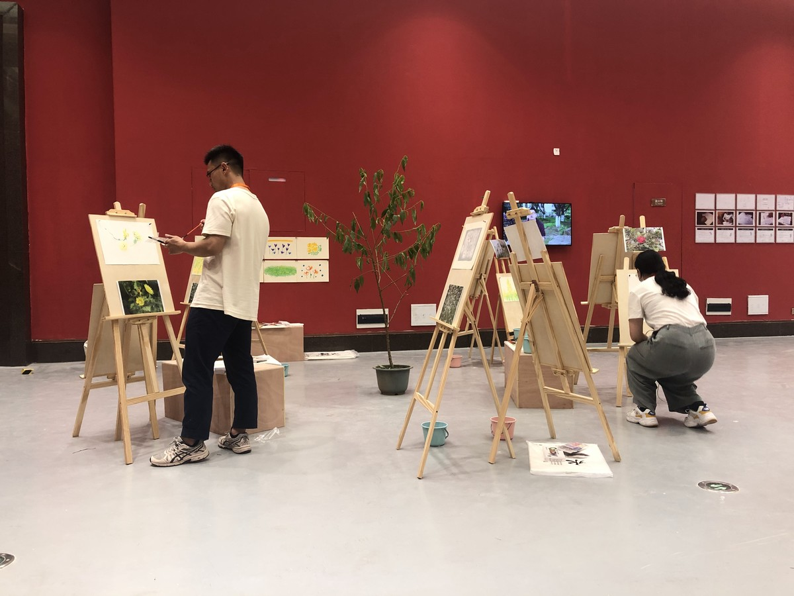
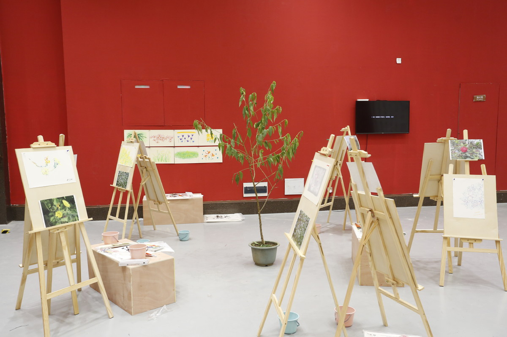
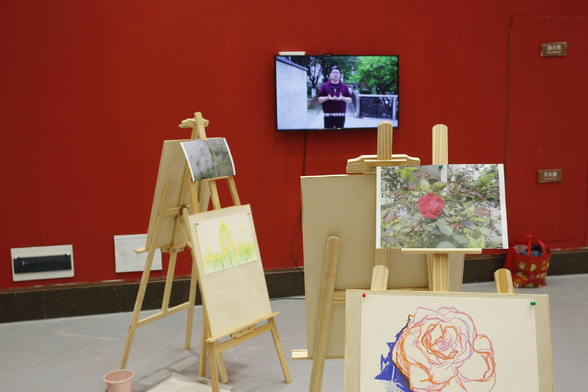
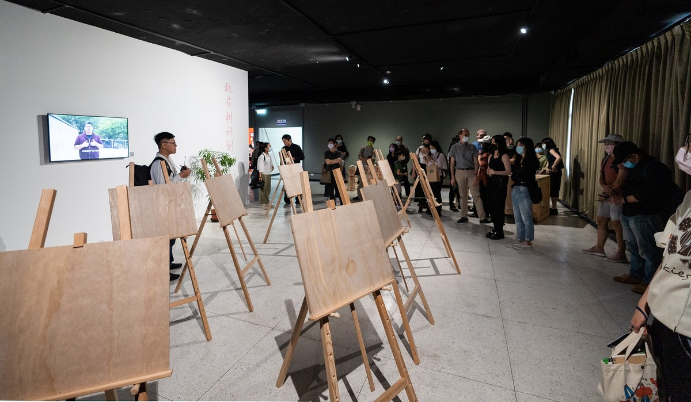

Home
Works
Curatorial & Public
Writing & Research
Bio & CV
sHI Wanwan
Artist
Home
Works
Curatorial & Public
Writing & Research
Bio & CV
桃花树计划

综合媒介，现场行为，2017-
邀请观众将湖南常德城市改造废墟上的小野花都画出来，并在展览现场卖掉。用这些钱购买桃花树，再种在观众所生活的城市里。
湖南常德是中国古代诗人陶渊明的故里，也是他在《桃花源记》里描述的理想家园的所在地。
石玩玩的《桃花树计划》透过城市中的桃花树作为经验关照的引题，式图以工作坊参与成员“卖画种树”产生艺术、经济与环境的转换。——陈晞（台湾艺评家）

浙江省展览馆，杭州

浙江省展览馆，杭州

空总台湾当代文化实验场，台北